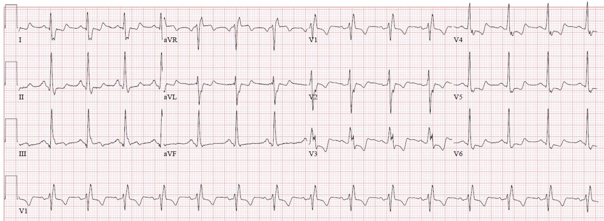
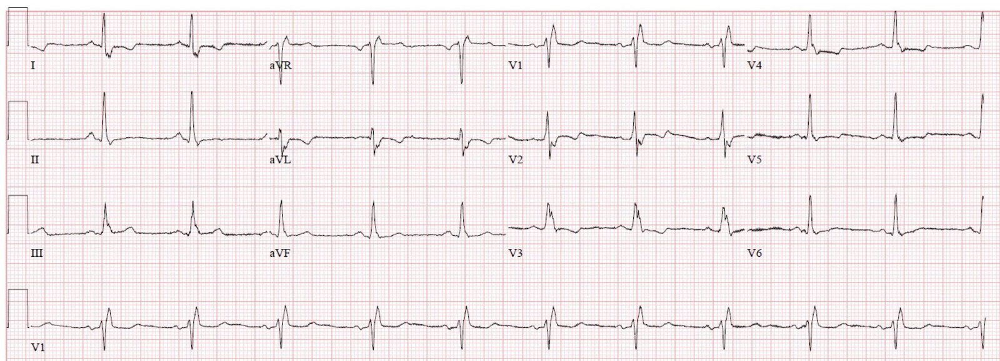
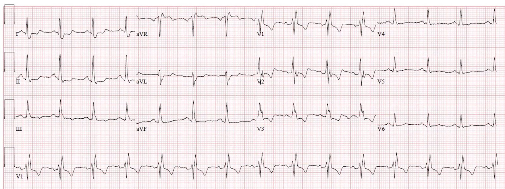
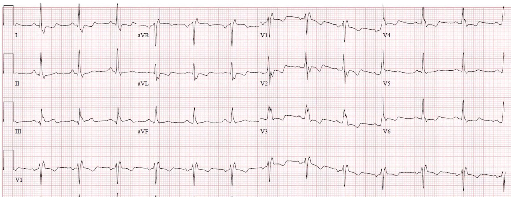
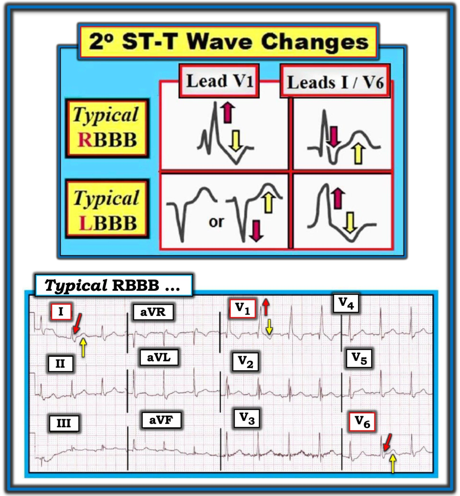
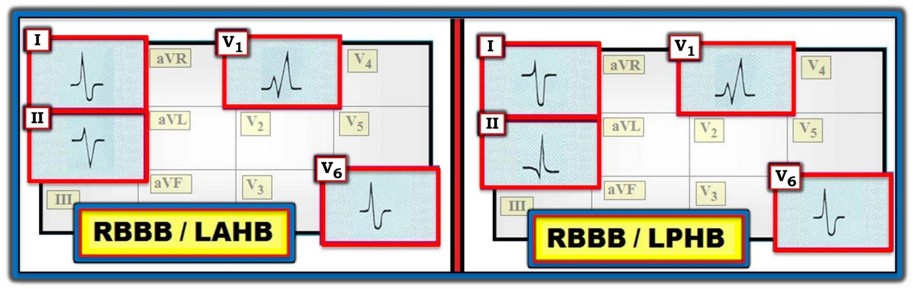
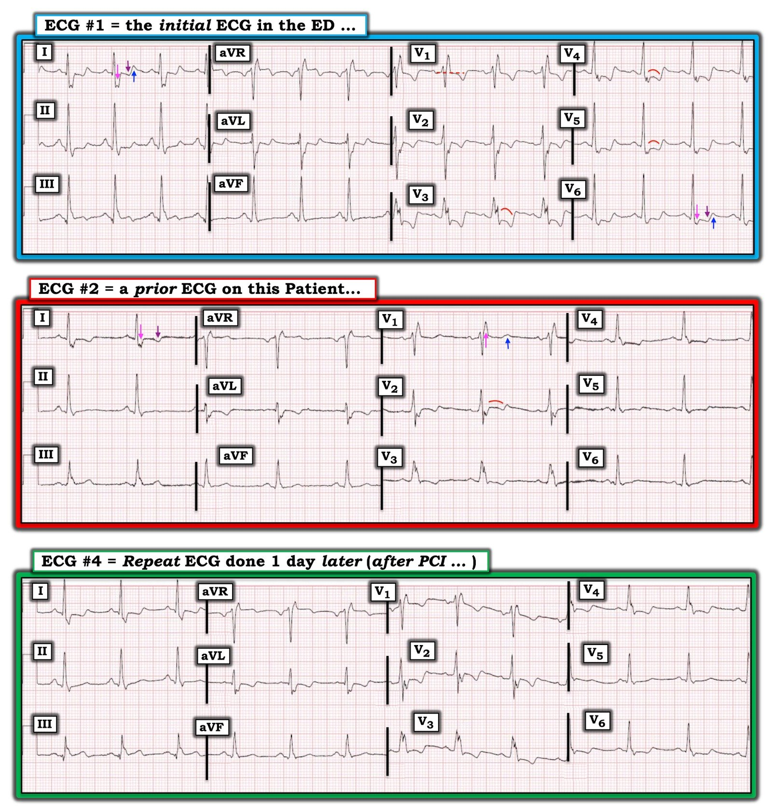

13/04/2020 — Một người đàn ông 60 mấy tuổi bị đau ngực. Đoạn ST và sóng T LUÔN được diễn giải trong bối cảnh phức bộ QRS của chúng
Bản dịch tiếng Việt của bài "A man in his 60s with chest pain. The ST segments and T waves are ALWAYS interpreted in the context of their QRS." – Dr. Smith’s ECG Blog. Giữ nguyên toàn bộ 9 hình ảnh của bản gốc.
Tác giả: Pendell Meyers
Một người đàn ông 60 mấy tuổi có tiền sử bệnh động mạch vành (CAD), phẫu thuật bắc cầu chủ vành (CABG), tăng huyết áp (HTN), đái tháo đường (DM) và hút thuốc lá, đến khám vì đau ngực và khó thở trong 1 giờ qua, kèm ho nhẹ trong vài ngày qua, và dĩ nhiên là yêu cầu xét nghiệm COVID.
Đây là điện tâm đồ lúc nhập viện của ông (được đưa cho tôi xem mà không kèm thông tin gì):


Các dấu hiệu thô:
– RBBB (một số người cũng sẽ nói có LPFB)
– Sóng T âm ở V1-V3
– ST chênh xuống (STD) ở V1-V6, I, aVL
– ST chênh lên (STE) ở aVR
– V2 có hình dạng QRS kỳ lạ, dường như không khớp với sự tăng tiến giữa V1 và V3, có thể do đặt sai vị trí điện cực
Diễn giải:
Trong bối cảnh RBBB, việc có sóng T âm và một mức nhỏ ST chênh xuống soi gương ở các chuyển đạo V1-V4 là bình thường (hiện tượng này được gọi là ngược hướng phù hợp (appropriate discordance), trong đó đoạn ST và sóng T lệch ngược hướng với phần lớn của phần QRS dẫn truyền bất thường). Nhưng cũng như mọi hiện tượng ngược hướng phù hợp, và cũng như mọi dấu hiệu điện tâm đồ nói chung, các dấu hiệu này luôn mang tính tương xứng (proportional).
Với tôi, mức ST chênh xuống ở V3-4 có vẻ quá sâu so với phức bộ QRS. Theo tôi đây là ngược hướng quá mức (excessive discordance), với vectơ ST chênh xuống cấp tính tối đa ở V3-V4. ST chênh xuống vẫn còn tới tận V6, nhưng tỷ lệ là tối đa ở V3-V4.
Như chúng tôi vẫn luôn nói trên blog này, ST chênh xuống tối đa ở V3-V4 luôn được xem là OMI thành sau cho tới khi chứng minh được điều ngược lại.
Vậy bước tiếp theo của bạn sẽ là gì nếu đây là bệnh nhân của bạn?
Chúng tôi xác nhận bệnh nhân đang đau ngực, và tôi tìm trong hệ thống điện tâm đồ cũ gần nhất:


Điện tâm đồ này cho thấy các tỷ lệ bình thường của RBBB, với các chuyển đạo V3 và V4 thể hiện sự ngược hướng phù hợp gồm ST chênh xuống rất nhỏ kèm sóng T âm nông. Điều thú vị là V2 một lần nữa trông lạc lõng, nhưng việc có nhiều điện tâm đồ khiến điều đó ít có khả năng.
Do mức độ nghi ngờ OMI cực kỳ cao, chúng tôi đã kích hoạt phòng thông tim (cath lab) dù điện tâm đồ này rõ ràng không đạt tiêu chuẩn STEMI.
Các bác sĩ tim mạch xuống khám và trong lúc chờ, chúng tôi ghi các chuyển đạo phía sau:


Có hai khả năng:
1) bệnh nhân đã bắt đầu tái tưới máu kể từ điện tâm đồ đầu tiên cách đây 10 phút, nhưng điều này cực kỳ khó xảy ra vì V1-V3 (vốn không bị di chuyển) vẫn giữ nguyên.
2) điện tâm đồ chuyển đạo phía sau này không cho thấy dấu hiệu nào của OMI thành sau, hoặc là vì
a. các chuyển đạo phía sau không nhạy với OMI thành sau (rất thường gặp tình trạng các chuyển đạo phía sau không cho thấy ST chênh lên đáng kể, và người thực hành bị yên tâm sai lầm vì các dấu hiệu ở chuyển đạo phía sau có vẻ ít đáng kể hơn so với 12 chuyển đạo thông thường)
hoặc
b. không có OMI thành sau (khó xảy ra)
Dĩ nhiên tôi không hề yên tâm, và bệnh nhân vẫn tiếp tục than đau mức 8/10.
Chúng tôi đã đề nghị mạnh mẽ các bác sĩ tim mạch đưa ông vào phòng thông tim, và do tiền sử, tình trạng đang đau ngực (và thời điểm trong ngày), ông đã được chụp mạch vành cấp cứu.
Họ phát hiện cầu nối CABG tới động mạch liên thất sau của ông bị tắc hoàn toàn do huyết khối với dòng chảy TIMI 0. Họ đã đặt stent với kết quả chụp mạch rất tốt.
Siêu âm tim cho thấy EF bảo tồn với “giảm động các phân đoạn thành sau và thành dưới-đáy.”
Troponin T lần đầu cho kết quả 0.03 ng/mL (tăng nhẹ trên giới hạn trên tham chiếu là dưới 0.01). Các lần troponin sau tăng dần tới 0.16 ng/mL nhưng không được theo dõi tới đỉnh.
Đây là điện tâm đồ của ông một ngày sau đó:


Ngoài ra, bệnh nhân có diễn biến suôn sẻ và được xuất viện về nhà. Kết quả COVID vẫn đang chờ!
Những điểm cần học:
Rất đáng để đầu tư luyện tập bằng cách xem thật nhiều ví dụ về RBBB, LBBB bình thường, v.v., để trong đầu bạn có một hình ảnh rõ ràng về sự ngược hướng bình thường và các tỷ lệ bình thường của từng kiểu dẫn truyền khác nhau.
Đoạn ST và sóng T luôn được đánh giá trong bối cảnh phức bộ QRS đã tạo ra chúng. Bạn phải hiểu nguyên lý ngược hướng phù hợp, và cách nó biểu hiện ở các kiểu dẫn truyền khác nhau, nếu muốn chẩn đoán OMI.
Nói chung, ST chênh xuống cấp tính tối đa ở V1-V4 nên được xem là OMI thành sau cho tới khi chứng minh được điều ngược lại.
Do đó, OMI thành sau đơn thuần có thể được chẩn đoán dựa vào ST chênh xuống ngược hướng quá mức, tối đa ở V1-V4.
Các chuyển đạo phía sau thường là phí thời gian, nhiều khi khiến người đọc thiếu kinh nghiệm yên tâm sai lầm, và rất rất hiếm khi thực sự giúp ích cho việc ra quyết định. Hãy ghi chúng nếu bạn không có việc gì tốt hơn để làm, nhưng đừng bao giờ để chúng làm bạn yên tâm nếu trực giác mách bảo rằng có ST chênh xuống thực sự, tối đa ở V1-V4. Bình luận của Smith: Lúc duy nhất tôi nghĩ chúng đáng ghi là khi trên điện tâm đồ không có bằng chứng nào của OMI – khi đó có thể bạn sẽ tìm thấy điều gì đó nhờ các chuyển đạo phía sau. Tôi nói “có thể”, nhưng tôi không nghĩ ra ca nào mà tôi tìm thấy điều gì đó mình đã không thấy trên 12 chuyển đạo thông thường. Y văn từ thập niên 90 cho rằng điều này có xảy ra, nhưng họ không công bố các điện tâm đồ thực tế, và có thể là nếu tôi xem chúng, tôi đã chẩn đoán được mà không cần điện tâm đồ chuyển đạo phía sau.
Ca này là thêm một ví dụ nữa cho thấy hiệu quả vượt xa các tiêu chuẩn STEMI thô sơ trong chẩn đoán nhồi máu cơ tim do tắc (Occlusion MI).
Xem thêm các ca liên quan sau:
Right Bundle Branch Block and ST Depression in V1-V3. Is that normal? And a complication. (Blốc nhánh phải và ST chênh xuống ở các chuyển đạo trước tim bên phải. Có bình thường không? Và một biến chứng.)
Is This a Simple Right Bundle Branch Block? (Đây có phải là blốc nhánh phải đơn thuần không?)
Teach your learners: when the QRS is wide, the J-point will hide, so trace it down and copy it over! (Hãy dạy học viên của bạn: khi QRS rộng, điểm J sẽ bị che khuất, vì vậy hãy dóng nó xuống và chép sang!)
PseudoSTEMI and True ST elevation in Right Bundle Branch Block (RBBB). Don’t miss case 4 at the bottom. (Giả STEMI và ST chênh lên thực sự trong blốc nhánh phải. Đừng bỏ lỡ ca thứ tư ở cuối bài.)

===================================
BÌNH LUẬN CỦA TÔI, bởi KEN GRAUER, MD (13/4/2020):
===================================
Một ca bệnh sâu sắc của Dr. Meyers — làm nổi bật nhiều điểm quan trọng về việc đánh giá các thay đổi điện tâm đồ do bệnh tim thiếu máu cục bộ khi có RBBB. Trước khi bàn về các bản ghi cụ thể trong ca này — tôi muốn điểm lại một góc nhìn khác nhằm nhanh chóng đánh giá (trong chưa đầy 5 giây) có RBBB hay không, cũng như sự có mặt (hoặc vắng mặt) của blốc phân nhánh (hemiblock).
- Để ôn lại — tôi đề nghị bạn xem bài ngày 1 tháng Bảy năm 2019 của Dr. Smith, trong đó có một số điểm tương đồng với ca mà Dr. Meyers trình bày ở đây.
Tôi đã đăng lại Hình 1 từ bài ngày 1 tháng Bảy năm 2019 này. Để xem bàn luận đầy đủ — Xin hãy XEM Bình luận của tôi và các link tôi đưa trong bài năm 2019 đó — nhưng nói ngắn gọn, hình TRÊN trong Hình 1 cho thấy hình dạng QRS dự kiến của RBBB và LBBB ở 3 chuyển đạo MẤU CHỐT ( = chuyển đạo bên phải V1 + các chuyển đạo bên trái I và V6).
- RBBB — được chẩn đoán khi có phức bộ rsR’ (hoặc dạng tương đương) ở chuyển đạo V1 + có sóng S tận rộng ở các chuyển đạo I và V6.
- LBBB — được chẩn đoán khi có phức bộ QS hoặc rS ở chuyển đạo V1 + có sóng R một pha ở các chuyển đạo I và V6.
ĐIỂM THEN CHỐT (PEARL) #1: Chuỗi mũi tên ĐỎ và VÀNG trong hình sơ đồ ở TRÊN của Hình 1 — sau đó được áp dụng cho một ví dụ RBBB thực tế trên bản ghi 12 chuyển đạo ở hình DƯỚI — minh họa khái niệm dễ dùng (và chính xác đến bất ngờ) về “ST đối hướng” (ST Opposition).
- Nghĩa là — đoạn ST và sóng T phải ngược hướng với sóng lệch cuối cùng của QRS (các mũi tên ĐỎ và VÀNG trong Hình 1) ở từng chuyển đạo trong 3 chuyển đạo MẤU CHỐT (tức là các chuyển đạo I, V1, V6). Lệch khỏi hình mẫu này là không bình thường — và cho thấy một thay đổi sóng ST-T nguyên phát (1°) (gợi ý khả năng thiếu máu cục bộ hoặc nhồi máu, có thể mới hoặc cũ).


Có BLỐC PHÂN NHÁNH không?
Trong ca được bàn hôm nay — đã có câu hỏi đặt ra về khả năng blốc hai phân nhánh (tức là, RBBB + LPHB). Nhận thấy sự thiếu đồng thuận giữa các bác sĩ tim mạch về vấn đề này — qua nhiều năm tôi đã xây dựng một cách tiếp cận đơn giản hóa giúp phân biệt chính xác RBBB có hay không có blốc phân nhánh trong chưa đầy 5 giây.
- NẾU bạn quan tâm tới cách tiếp cận dễ–dùng của tôi trong VIDEO về chẩn đoán điện tâm đồ các Blốc phân nhánh — BẤM VÀO ĐÂY (link này đưa bạn thẳng tới mốc 26:08 làm điểm bắt đầu xem trong video 42 phút về Trục & Blốc phân nhánh này).
- Ngoài ra — bàn luận đầy đủ về cách tiếp cận của tôi với các Blốc phân nhánh có trong bản tải miễn phí PDF Phần 7 về Trục/Blốc phân nhánh (từ cuốn ECG-2014-ePub của tôi).
Tôi tóm tắt “câu trả lời ngắn gọn” cho cách tiếp cận của tôi về các Blốc phân nhánh dưới đây — và minh họa trong Hình 2:
- Mặc dù nhánh trái bó His chia thành đúng nghĩa là hàng triệu sợi — nhưng trên thực hành, sau đoạn thân chung ngắn của nhánh trái — phần còn lại của nhánh trái có 2 nhánh chính: i) phân nhánh trái trước ; và, ii) phân nhánh trái sau. Dẫn truyền bị suy giảm qua một trong hai phân nhánh này gây ra blốc phân nhánh. (Nếu hoàn toàn không có dẫn truyền qua cả hai phân nhánh — kết quả là LBBB hoàn toàn).
- Blốc phân nhánh có thể xảy ra đơn độc — hoặc, đi kèm RBBB (khi đó ta nói có blốc “hai phân nhánh” (bifascicular block)).
- LPHB (Left Posterior HemiBlock – blốc phân nhánh trái sau) hiếm gặp — vì về mặt giải phẫu, phân nhánh trái sau là phân nhánh dày hơn nhiều, và được cấp máu kép. Khi gặp — LPHB hầu như luôn đi kèm RBBB.
- LAHB (Left Anterior HemiBlock – blốc phân nhánh trái trước) thường gặp — hoặc là một rối loạn dẫn truyền đơn độc, hoặc phối hợp với RBBB. ĐIỂM THEN CHỐT (PEARL) #2: Theo kinh nghiệm của tôi — tới 98-99% các blốc phân nhánh là LAHB.
- Chẩn đoán LAHB rất dễ! Mặc dù các chuyên gia đưa ra nhiều tiêu chuẩn khác nhau — trên thực hành, có LAHB nếu bạn có LAD (Left Axis Deviation – trục lệch trái) “bệnh lý” — mà tôi định nghĩa là trục lệch trái âm hơn -30 độ. ĐIỂM THEN CHỐT (PEARL) #3: Nếu phức bộ QRS ở chuyển đạo II rõ ràng âm nhiều hơn dương — thì trên thực hành, có LAHB!
- Lưu ý: Khái niệm “trục” không có ý nghĩa khi có RBBB. Lý do là hướng hoạt hóa thất trong RBBB trước tiên đi từ trái sang phải (khi vách được khử cực) — rồi từ phải sang trái (khi thất trái được khử cực) — và cuối cùng, lại đi từ trái sang phải (khi thất phải “bị blốc” cuối cùng được khử cực). Do đó, phép tổng hợp vectơ (tức là “trục”) của hiệu ứng zíc-zắc trái-sang-phải-sang-trái-sang-phải này, tạo ra bởi hướng hoạt động điện liên tục thay đổi trong quá trình khử cực thất với RBBB — không mang lại thông tin lâm sàng hữu ích.
- ĐIỂM THEN CHỐT (PEARL) #4: TẤT CẢ những gì chúng ta quan tâm về mặt lâm sàng khi có RBBB là liệu: i) RBBB là rối loạn dẫn truyền duy nhất; ii) có RBBB + LAHB; hay, iii) có RBBB + LPHB.
Hình 2 tóm tắt dạng sơ đồ những gì cần tìm khi 3 chuyển đạo MẤU CHỐT (I, V1, V6) xác lập chẩn đoán RBBB. Sẽ có một trong 3 tình huống sau:
- Có RBBB/LAHB — nếu ngoài RBBB, phức bộ QRS ở chuyển đạo II rõ ràng âm nhiều hơn dương (Ô bên trái trong Hình 2).
- Có RBBB/LPHB — nếu ngoài RBBB, phần thẳng của nhánh xuống sóng S ở chuyển đạo I rõ ràng âm là chủ yếu (Ô bên phải trong Hình 2).
- Nếu đi kèm RBBB mà phức bộ QRS ở chuyển đạo II không âm là chủ yếu — và, phần thẳng của sóng S ở chuyển đạo I không rõ ràng âm nhiều hơn hẳn dương — thì tất cả những gì có ở đây chỉ là RBBB (Đây là trường hợp của bản ghi phía dưới trong Hình 1).


Hãy quay lại với CA BỆNH HÔM NAY:
Để minh họa — tôi đã đăng lại và đánh dấu một số dấu hiệu chính trên 3 bản ghi 12 chuyển đạo liên quan đến ca này trong Hình 3. (Lưu ý rằng tôi đã bỏ điện tâm đồ #3 [bản ghi các chuyển đạo phía sau] khỏi Hình 3 — vì theo bàn luận của Dr. Meyers, bản ghi này không đóng góp gì cho ca này).


SUY NGHĨ CỦA TÔI về điện tâm đồ #1: Tôi hoàn toàn đồng ý với Dr. Meyers rằng ngay cả khi không có bất kỳ thông tin lâm sàng nào về bệnh nhân trong ca này — điện tâm đồ #1 phải được diễn giải là gợi ý rất mạnh bệnh mạch vành cấp cho tới khi chứng minh được điều ngược lại.
- Nhịp trong điện tâm đồ #1 là nhịp xoang đều, tần số ~85 lần/phút. Khoảng PR bình thường — nhưng phức bộ QRS rộng do RBBB hoàn toàn (chẩn đoán dựa vào phức bộ rSR’ điển hình ở chuyển đạo V1, với "tai thỏ" bên phải cao hơn + sóng S tận rộng ở các chuyển đạo bên I và V6).
- Hoàn tất đánh giá hệ thống — QTc có vẻ hơi kéo dài — có RAA (sóng P cao, nhọn ở chuyển đạo II, cao ≥2,5 mm) — có các sóng q nhỏ, hẹp, chưa rõ ý nghĩa ở các chuyển đạo dưới-bên — và có các thay đổi ST-T bất thường rõ rệt (sẽ được mô tả chi tiết ngay sau đây).
- Như Dr. Meyers đã nêu — chuyển đạo V2 trông "lạc lõng" (đơn giản là không hợp lý về mặt sinh lý khi thấy một phức bộ QRS âm là chủ yếu ở chuyển đạo V2, kẹp giữa phức bộ rSR’ ở V1 và phức bộ QRS dương là chủ yếu mà ta thấy ở chuyển đạo V3).
- Về câu hỏi liệu có blốc hai phân nhánh (RBBB + LPHB) trong điện tâm đồ #1 hay không — phần thẳng ban đầu của nhánh xuống sóng S ở chuyển đạo I rõ ràng không âm nhiều hơn dương. Theo tiêu chuẩn tôi ưa dùng (đã bàn ở trên trong Hình 2) — phần thẳng của nhánh xuống sóng S ở chuyển đạo I không chỉ phải âm nhiều hơn dương, mà còn phải âm là chủ yếu — và tiêu chuẩn này rõ ràng không được thỏa mãn. Vì vậy, tôi cho rằng có RBBB trong điện tâm đồ #1 — nhưng không có LPHB.
LÀM SAO Ta BIẾT điện tâm đồ #1 Rõ ràng Bất thường?
Ngay cả khi không có bất kỳ thông tin lâm sàng nào — vẫn có một số dấu hiệu trong điện tâm đồ #1 gợi ý rõ hội chứng vành cấp cho đến khi chứng minh được điều ngược lại. Đi đến cùng câu trả lời như Dr. Meyers — tôi tiếp cận vấn đề từ một góc nhìn hơi khác:
- Theo khái niệm ST Đối hướng (ST Opposition) (Xem Điểm then chốt #1 và Hình 1 ở trên) — sóng T ở các chuyển đạo bên I và V6 của điện tâm đồ #1 phải ngược hướng với sóng lệch QRS cuối cùng ở các chuyển đạo này, tức là sóng S tận rộng (mũi tên HỒNG ở I và V6). Nhưng thay vì ngược hướng (tức là sóng T dương hoàn toàn) — sóng T ở chuyển đạo I và V6 của điện tâm đồ #1 lại hai pha (mũi tên TÍM hướng xuống; mũi tên XANH DƯƠNG hướng lên). Điều này không bình thường. Thay vào đó, nó là một thay đổi sóng T nguyên phát — mà trong bối cảnh lâm sàng đau ngực mới xuất hiện có thể chỉ ra thiếu máu cục bộ hoặc nhồi máu, có thể là cấp tính.
- Cũng theo nguyên tắc ST Đối hướng này — cả đoạn ST và sóng T ở chuyển đạo V1 đều phải ngược hướng với sóng lệch QRS cuối cùng ( = R’) ở chuyển đạo này. Nhưng thay vì cho thấy ST chênh xuống nhẹ — đoạn ST ở chuyển đạo V1 lại đẳng điện (đường chấm ngang màu ĐỎ ở chuyển đạo V1). Điều này không bình thường!
- Dr. Meyers đã nhấn mạnh rằng mức điểm J chênh xuống ở chuyển đạo V3 và V4 của điện tâm đồ #1 là không tương xứng với mức cần có khi chỉ có RBBB đơn thuần. Cách dễ nhớ điều này — là nghĩ rằng vì RBBB được dự kiến sẽ tạo ra một mức ST chênh xuống nào đó ở chuyển đạo V1 (theo khái niệm ST Đối hướng) — nên mức điểm J chênh xuống có xu hướng lớn nhất ở chuyển đạo V1 (và có lẽ cả ở V2) nếu thứ duy nhất đang diễn ra là RBBB đơn thuần (vì chuyển đạo V1 là chuyển đạo mà ta thấy phức bộ rsR’). Đây không phải là điều ta thấy ở điện tâm đồ #1 — ở chỗ mức điểm J chênh xuống tăng dần khi ta đi sang các chuyển đạo giữa ngực.
- Cuối cùng — hình dạng của ST-T trông "lạc lõng". Thay vì một đoạn ST tương đối thẳng, dốc xuống nhẹ như dự kiến khi đáp ứng với RBBB đơn thuần — lại có đoạn ST dạng vòm (coving) (các đường cong màu ĐỎ ở chuyển đạo V3, V4, V5 của điện tâm đồ #1) — và điều này rõ ràng không bình thường. ST chênh xuống dạng bậc thềm (thẳng) ở chuyển đạo II và V6 cũng không bình thường.
- Điều cốt lõi: Dù không thể biết các dấu hiệu nêu trên trong điện tâm đồ #1 là cấp tính hay đã có từ lâu nếu không xem điện tâm đồ cũ — hình dạng vòm và mức ST chênh xuống không tương xứng mà ta thấy ở bản ghi này vượt xa những gì dự kiến chỉ do RBBB — và phải được diễn giải là cấp tính cho đến khi chứng minh được điều ngược lại!
- T.B. (P.S.): Bạn có để ý sự phân mảnh quá mức ở sóng S của các chuyển đạo I, aVL, V2, V4, V5 — và ở thành phần R’ ở chuyển đạo V3 không? Mức phân mảnh này không được dự kiến với RBBB đơn thuần — và gợi ý mạnh rằng đây là bệnh nhân có bệnh tim cấu trúc nền (tức là sẹo, nhiều khả năng do nhồi máu trước đó).
BỆNH SỬ Giúp được Gì?
Cả Dr. Meyers lẫn tôi đều không biết bất kỳ thông tin lâm sàng nào vào lúc chúng tôi đọc điện tâm đồ #1 lần đầu. Sau đó chúng tôi được biết bệnh nhân là một người đàn ông 60 mấy tuổi có tiền sử bệnh mạch vành, đã phẫu thuật bắc cầu chủ vành (CABG) — và đến viện vì đau ngực mới xuất hiện.
- Biết được thông tin lâm sàng này trong bối cảnh bản ghi thấy ở điện tâm đồ #1 càng củng cố nhu cầu thông tim kịp thời.
Ngoài RBBB — điện tâm đồ Cũ có Đúng như Dự kiến với RBBB không?
Tôi đọc điện tâm đồ cũ ( = điện tâm đồ #2) là nhịp xoang kèm RBBB hoàn toàn. Tôi ghi nhận thêm một số dấu hiệu:
- Phân mảnh quá mức so với RBBB (ở chuyển đạo I, aVL, V3) — gợi ý bệnh nhân có bệnh tim nền.
- Sóng T ở chuyển đạo I của điện tâm đồ #2 âm (mũi tên TÍM) thay vì dương như dự kiến nếu chỉ đơn thuần có RBBB.
- Đoạn ST ở chuyển đạo V1 của điện tâm đồ #2 không chênh xuống (như ta dự kiến) — và sóng T ở chuyển đạo này dương (mũi tên XANH DƯƠNG) thay vì ngược hướng với sóng lệch QRS cuối cùng (R’) ở chuyển đạo này (mũi tên HỒNG ở V1).
- Hình dạng vòm của đoạn ST ở chuyển đạo V2 là không bình thường (đúng ra ở chuyển đạo này phải là một đoạn ST chênh xuống thẳng hơn, dốc thoai thoải hơn).
- Điều cốt lõi: Dù không thể biết các dấu hiệu bất thường này trong điện tâm đồ cũ ( = điện tâm đồ #2) là mới hay cũ (tôi đoán là chúng đã có từ trước) — các dấu hiệu này trong điện tâm đồ #2 là nhiều hơn những gì dự kiến với RBBB đơn thuần, đơn độc.
- Dù vậy — so sánh điện tâm đồ #1 với điện tâm đồ #2 cho thấy rõ một loạt thay đổi đáng lo ngại, trông như thiếu máu cục bộ, nay đã xuất hiện ở điện tâm đồ #1!
Bạn Thấy Gì trên điện tâm đồ Cuối cùng (ghi sau PCI)?
Điện tâm đồ cuối cùng trong ca này ( = điện tâm đồ #4), ghi vào ngày hôm sau sau PCI, một lần nữa cho thấy nhịp xoang kèm RBBB.
- So với điện tâm đồ ban đầu ( = điện tâm đồ #1) — mức ST chênh xuống (đặc biệt ở các chuyển đạo giữa ngực) rõ ràng ít hơn ở điện tâm đồ #4.
- Dù vậy — vẫn còn một số dấu hiệu điện tâm đồ bất thường đã có từ lâu trong điện tâm đồ #4, vượt quá những gì dự kiến với RBBB đơn thuần. Các dấu hiệu này gồm ST chênh xuống dạng bậc thềm (dẹt) kèm sóng T hai pha ở chuyển đạo I và V6 — và đoạn ST dạng vòm, với mức điểm J chênh xuống ở các chuyển đạo như V4 nhiều hơn mức dự kiến với RBBB đơn thuần.
Xin CẢM ƠN Dr. Meyers đã trình bày ca bệnh này!
- NẾU Bạn Muốn Xem Thêm Một Ví dụ Khác — về việc áp dụng các khái niệm trên trong nhận diện RBBB + blốc phân nhánh + bệnh mạch vành cấp — hãy XEM bài đăng ngày 21 tháng Mười Một năm 2018 trên Dr. Smith’s ECG Blog!